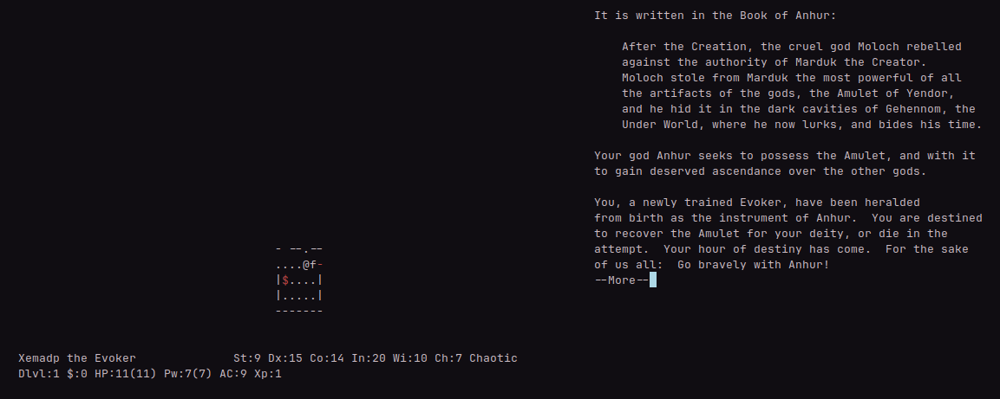

I was trying to install nethack from the Arch repo and for some weird reason the ownership of /var/games/nethack/record and /var/games/nethack/perm were messed with and the game couldn’t modify them. I tried:
sudo chmod 666 /var/games/nethack/record
sudo chmod 666 /var/games/nethack/perm
git clone https://github.com/NetHack/NetHack
cd NetHack
sys/unix/setup.sh sys/unix/hints/linux.370
make fetch-lua && make fetch-lua
make && make install
